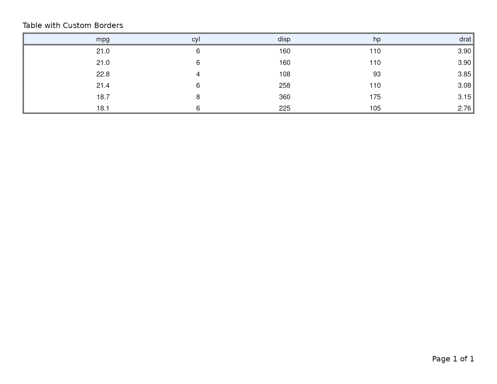

Exporting flextable Tables to PDF
v07-flextable.RmdThis vignette covers export_tfl() as used with flextable
objects. For data-frame tables built with tfl_table(), see
vignette("v02-tfl_table_intro"). For gt tables, see
vignette("v05-gt_tables"). For rtables tables, see
vignette("v06-rtables"). For figure output, see
vignette("v01-figure_output").
Basic usage
Pass a flextable object directly to
export_tfl(). Captions set via set_caption()
are automatically extracted and placed in writetfl’s caption zone.
Footer rows (from footnote() or
add_footer_lines()) are extracted into writetfl’s footnote
zone.
ft <- flextable(head(iris, 10)) |>
set_caption("Iris Measurements — First 10 Rows") |>
add_footer_lines("Source: Anderson (1935).")
export_tfl(ft, preview = TRUE)Caption handling
The caption from set_caption() is placed in writetfl’s
caption section above the table. It does not appear in the
gen_grob() output (flextable reserves captions for document
formats like Word and HTML), so there is no duplication.
ft <- flextable(head(mtcars[, 1:6], 8)) |>
set_caption("Table 1. Selected Motor Trend Variables")
export_tfl(ft, preview = TRUE,
header_left = "Appendix A",
header_rule = TRUE,
footer_rule = TRUE
)Footnote extraction
Footer rows added via footnote() or
add_footer_lines() are extracted as plain text and placed
in writetfl’s footnote zone below the table. The footer rows are removed
from the flextable before rendering so they don’t appear twice.
When footnote() is used, the superscript reference
symbols in body cells are preserved — they still point to the footnotes
now positioned in writetfl’s footnote section.
ft <- flextable(head(iris, 8)) |>
set_caption("Table 2. Iris with Footnotes")
ft <- footnote(ft, i = 1, j = 1, part = "body",
value = as_paragraph("Measured in centimetres."),
ref_symbols = "a"
)
ft <- footnote(ft, i = 1, j = 3, part = "body",
value = as_paragraph("Petal measurements are less variable."),
ref_symbols = "b"
)
export_tfl(ft, preview = TRUE,
header_left = "Study Report",
header_rule = TRUE,
footer_rule = TRUE
)Adding page layout elements
All of writetfl’s page layout arguments work with flextable tables.
Pass them via ... just as you would for figures.
ft <- flextable(head(mtcars[, 1:6], 10)) |>
set_caption("Table 3. Motor Trend Cars") |>
add_footer_lines("Source: Motor Trend (1974).")
export_tfl(
ft,
preview = TRUE,
header_left = "Study Report",
header_right = format(Sys.Date(), "%d %b %Y"),
header_rule = TRUE,
footer_rule = TRUE
)Multiple flextable tables
Pass a list of flextable objects to produce a multi-page
PDF with one table per page.
ft1 <- flextable(head(iris, 10)) |>
set_caption("Table 1. Iris (first 10 rows)")
ft2 <- flextable(tail(iris, 10)) |>
set_caption("Table 2. Iris (last 10 rows)")
export_tfl(
list(ft1, ft2),
file = "two-tables.pdf",
header_left = "Appendix",
header_rule = TRUE
)Automatic pagination
When a flextable table is too tall to fit on a single page,
export_tfl() splits it across pages by subsetting body
rows. The header is repeated on each page, and caption and footnote are
carried through to every page.
big_data <- data.frame(
ID = seq_len(60),
Name = paste("Subject", seq_len(60)),
Age = sample(25:75, 60, replace = TRUE),
Weight = round(rnorm(60, 70, 12), 1),
Score = round(runif(60, 50, 100), 1),
Group = rep(c("Treatment", "Control"), each = 30)
)
big_ft <- flextable(big_data) |>
set_caption("Table 5. Subject Listing — Full Cohort") |>
add_footer_lines("Source: Simulated clinical trial data.") |>
theme_booktabs()
export_tfl(
big_ft,
preview = 1:2,
header_left = "Analysis Report",
header_rule = TRUE,
footer_rule = TRUE
)Note: When pagination occurs, per-cell formatting
applied via color(), bg(),
bold(), etc. is not preserved on paginated pages. Themes
(e.g., theme_vanilla()) are not re-applied. For tables with
extensive cell-level formatting, ensure the table fits on a single page
or split the data manually before creating flextable objects.
Preserved features
The following flextable features are preserved through the
gen_grob() rendering pipeline:
| Feature | Preserved? | Notes |
|---|---|---|
set_caption() |
Yes | Extracted as writetfl caption |
footnote() |
Yes | Text extracted as writetfl footnote; reference symbols preserved in cells |
add_footer_lines() |
Yes | Extracted as writetfl footnote |
add_header_row() |
Yes | Rendered as part of table header |
add_header_lines() |
Yes | Rendered as part of table header |
set_header_labels() |
Yes | Column header labels |
merge_v(), merge_h(),
merge_at()
|
Yes | Cell merging |
border(), hline(),
vline()
|
Yes | All border styles |
color(), bg()
|
Yes | Text and background colours |
bold(), italic()
|
Yes | Text emphasis |
align(), align_text_col()
|
Yes | Cell alignment |
theme_*() functions |
Yes | All built-in themes |
colformat_*() functions |
Yes | Number/date formatting |
width(), height()
|
Yes | Column widths scaled to fit page |
as_image(), as_raster()
|
Partial | Images render but require appropriate device |
as_equation() |
No | Equations not supported in grid rendering |
hyperlink_text() |
No | Hyperlinks not supported in grid/PDF |
Themes
ft <- flextable(head(iris, 8)) |>
set_caption("Table with Booktabs Theme") |>
theme_booktabs()
export_tfl(ft, preview = TRUE)Merged cells
ft <- flextable(head(iris, 8)) |>
set_caption("Table with Merged Cells") |>
merge_v(j = "Species")
export_tfl(ft, preview = TRUE)Borders and colours
ft <- flextable(head(mtcars[, 1:5], 6)) |>
set_caption("Table with Custom Borders") |>
border_outer(border = officer::fp_border(width = 2)) |>
bg(i = 1, bg = "#E8F0FE", part = "header")
export_tfl(ft, preview = TRUE)